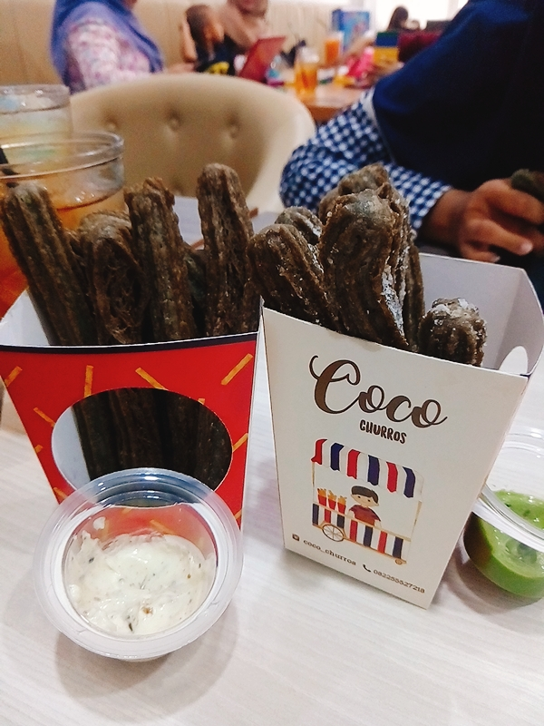
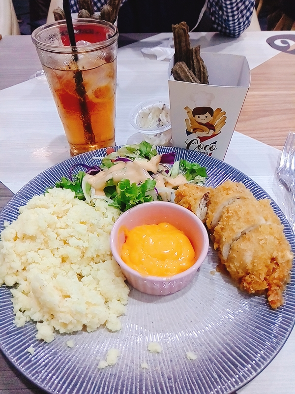
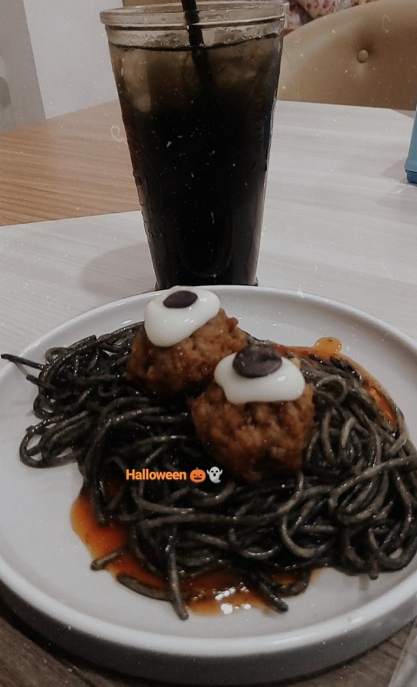

Ofcourse when you visit Coco Churros, the must menu to buy is their churros. My favourite is Black Churros with Vanilla Dip without sugar sprinkles. This is a great dessert!

Defenitly menu that I have to eat at Coco Churros! The portion is so big for me. It makes me feel full for 5 hours after eat the whole food, lol. I highly recommend this one!

This one is the special menu that come out for the Halloween! I don't why but the black (halloween) version is more tasty than the normal one. If you visit Coco Churros when it's Halloween, don't forget to try this one too!

That's all best menu at Coco Churros. I wish this will be informative for you guys! Please wait for my next review and recommendation!